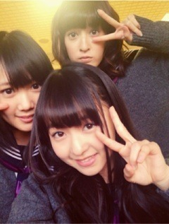

| 2012/11 12 Mon | 287回目*marika |
いつも読んでくださってる方、
初めて読んでくださった方、
コメントしてくださった方、
ありがとうございます。
...
前々回のクイズの答え
言うの忘れてた！
答えはらりん♪
なかなかむずかったね。
......
ハッピーmusicでサプライズ披露！
そして乃木どこで披露！の
＼制服のマネキン／

私の目が眠そう笑
アンダーメンバーはニットを
着て踊ります。
3人ともグレーニット♪
実はセーラー服ずっと憧れてたので
嬉しかったー
 ふふふ
ふふふ
ふふふ
ハッピーmusic ライブはどうでした？
来てくださったまりっ会のみなさん...
まさか私が出るとは
思わなかったでしょう
 ？
？
？
最後の最後の一曲でね！
4thシングル制服のマネキン
ライブ初披露でした♪
一曲でも出演できて嬉しかったです。
楽屋がNMB48さんと隣でした！
おしゃべりしてる声を聞いて
「あ、関西弁...♪」
なんて心の内で思ってました←
...かわいらしかった。
素晴らしいきらきら感。
......
私がさゆりんのブログに
コメントしたの知ってる人挙手！
なんせフルネームだからね。
普通にわかるよね笑
コメントし合いっこしたー
...と思ったら、隠れてまいやんも
コメントしてくれてたんだよー

次、私ってわからないようなので
まいやんにコメントしよーっと:D
何にしようかな。。
「肩こりひどくて肩に手をやるのが
くせになっちゃった☆にこっ」
......
前にある撮影の合間にカメラで
メンバーをめっちゃ綺麗に
撮るのにはまって、撮りまくってたら
もうね。
メンバーがね。
かわいすぎて...

最近見る度かわいい！って
声に出してしまう。
だって本当にそーなんだもん！
どうしよう。
乃木メンだいすき。
ではおやすみなさい。
...まとまってない記事で
ごめんなさい

まりか
コメント(217)
2012/11/12 01:24